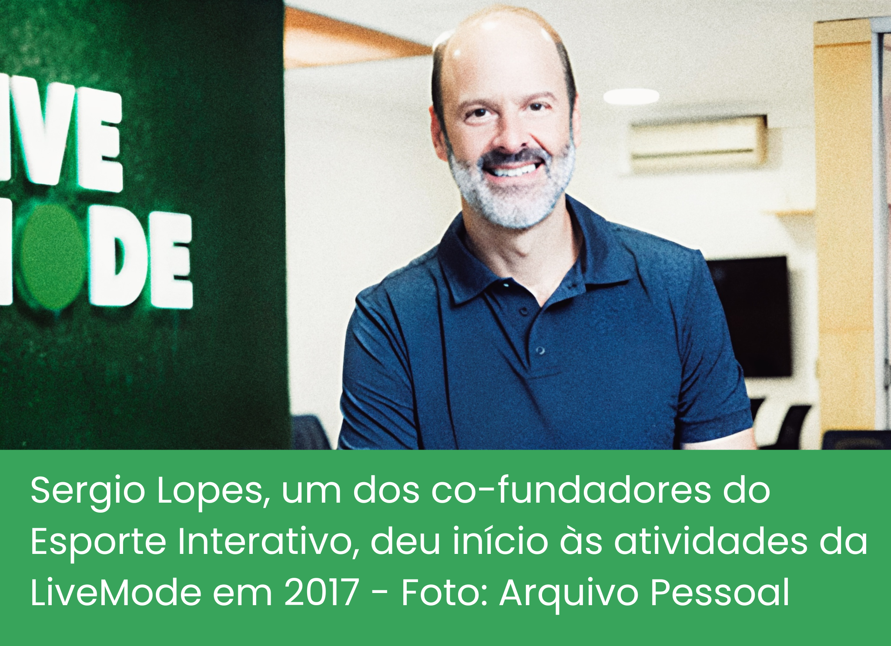
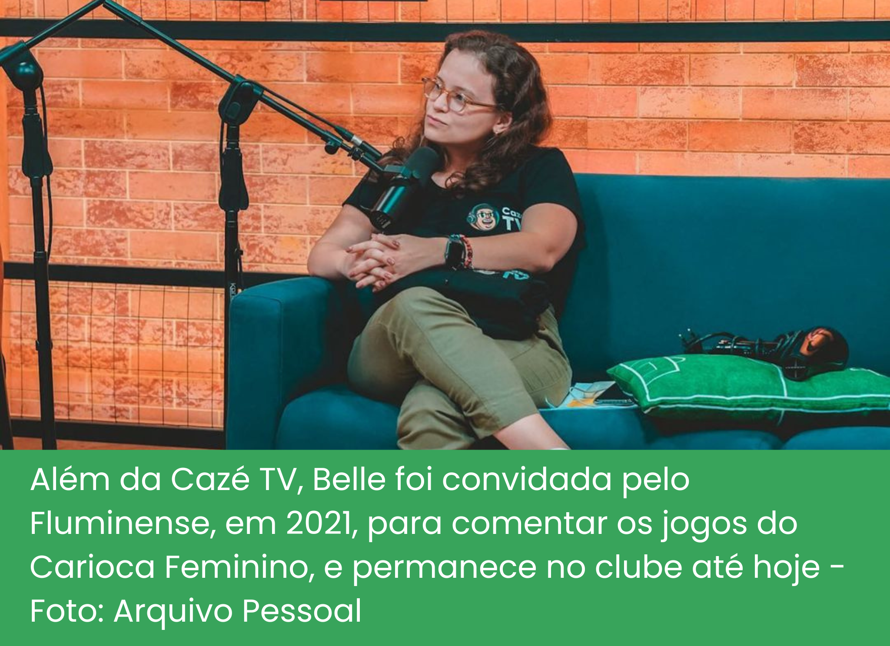
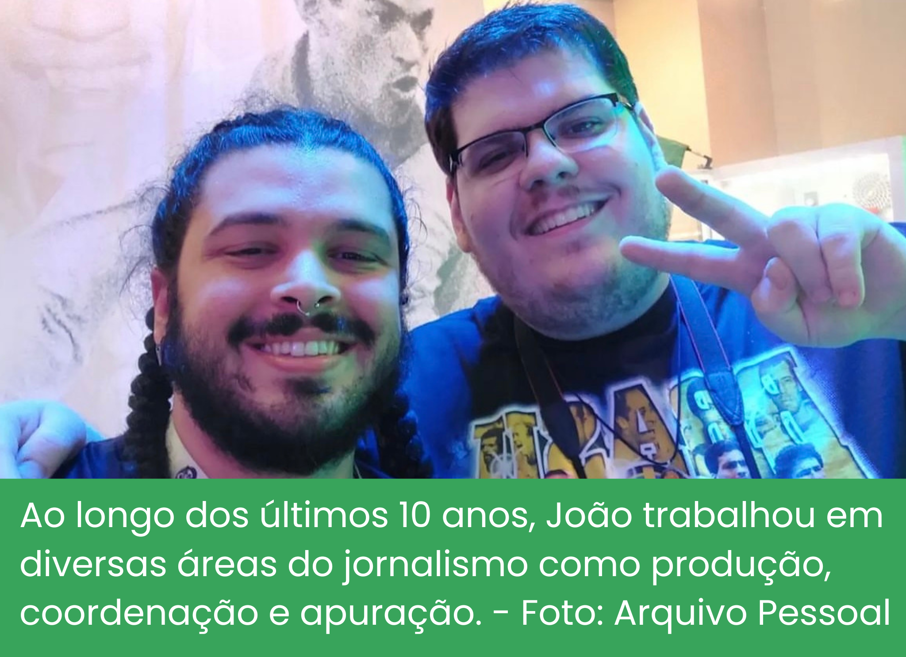

Nos bastidores da emoção: As vozes que levam os jogos de futebol até você
O maior canal de esportes do Brasil, segundo o Streams Charts, 6,9 milhões de espectadores simultâneos, mais de 12 milhões de inscritos no YouTube e Twitch. Estes são alguns recordes da Cazé TV, estrelada pelo maior streamer esportivo do mundo em 2022, Casimiro Miguel.
Dominando o pódio de lives mais assistidas do YouTube Brasil com seu jeito bem humorado e bordões que viralizam, o streamer reúne milhares de fãs com as suas transmissões que fogem do modelo tradicional. Desde vídeos reagindo a comidas inusitadas, quedas de moto, tour por mansões, e o seu principal foco: o futebol.
E o que antes eram simples reacts aos melhores momentos dos jogos, transmitidos por meio do seu perfil na Twitch, resultou na criação da Cazé TV, um canal secundário que se tornou pioneiro na cobertura de competições esportivas no Brasil. Mas como tudo isso começou?
A Parceria
“Juntos para revolucionar as transmissões esportivas”. Essa foi a frase utilizada por Casimiro e LiveMode ao firmarem acordo em janeiro de 2022. A partir desse momento, a empresa assumiu o papel de representante exclusiva do Casimiro para atividades comerciais, parcerias com marcas, integração em plataformas e criação de iniciativas personalizadas em seus espaços virtuais.
Gerenciadora de direitos esportivos, a empresa carioca foi responsável pela transmissão na Twitch do Casimiro de jogos do Campeonato Carioca 2022 e das partidas do Athletico Paranaense, como mandante, pelo Brasileirão, e juntos alcançaram um marco histórico na mídia esportiva: a transmissão da Copa do Mundo de 2022, por meio das plataformas digitais.
Ao todo, o acordo com a FIFA permitiu a transmissão de 22 jogos do mundial, incluindo todos os jogos do Brasil, as duas semifinais e a final.
Para comercializar, promover e produzir as transmissões, em novembro do mesmo ano, Casimiro e LiveMode oficializaram a criação de um novo canal no YouTube e na Twitch, a Cazé TV, uma concretização da popularidade das transmissões online nos últimos anos, devido ao avanço da tecnologia, e um grande passo para a mudança nos hábitos de consumo de conteúdos esportivos.
"A gente gosta de achar aquele caminho que ainda ninguém trilhou, mas que tem uma jornada imensa pela frente. A gente vai - muitas vezes - pela estrada que ninguém ainda teve coragem de percorrer. Testa o solo, afasta o mato, encontra a trilha ou abre o caminho todo do zero. Mas também pega atalhos, também observa quem também tá andando nesse terreno. E ajeita o solo, cimenta, deixa a estrada pronta pra mais gente chegar.", Livemode via Instagram
Criada por Sérgio Lopes e Edgar Diniz, o objetivo da LiveMode é desenvolver abordagens inovadoras para a transmissão e a exploração de oportunidades comerciais no âmbito do esporte ao vivo. “Esse mundo digital ainda tem muito a ser explorado e a gente ainda não sabe exatamente como é formato final dele, ele pode ir se transformando ao longo do tempo, pois ainda há vários modelos surgindo e todos eles têm seu jeito diferente de transmitir esporte”, é como explica Sérgio Lopes, que anteriormente, em 2004, fundou também o Esporte Interativo, veículo de transmissões esportivas que depois de mais de uma década, foi comprado pela Turner (atual WarnerMedia).
Além de cofundador da empresa, Sérgio atua como Investidor em start-ups de mídia e tecnologia, gerenciamento de publicidades, marketing, imprensa e relacionamento com operadoras de TV paga e de conteúdos para a internet.
Com uma ampla experiência no âmbito esportivo, ele carrega consigo a construção de um formato completamente novo do futebol nas plataformas de live streaming e nos conta sobre sua experiência, estratégias e o crescimento dessa parceria de sucesso. “Usar o poder de influenciadores para contar a história de grandes eventos esportivos ao vivo era algo que sempre quisemos testar”, comenta.
O êxito nas transmissões da Copa do Mundo 2022 foi tamanho, que de lá pra cá, diversas oportunidades surgiram para transmitir não apenas futebol, mas outras modalidades de esporte também.
Entidades como a Federação Paulista de Futebol, FIFA, Liga Forte Futebol e o Comitê Olímpico Brasileiro firmaram parceria com a Cazé TV, e, até novembro de 2023, já foram transmitidos o Mundial de Clubes, Campeonato Carioca em parceria com o Vasco e Botafogo, o Brasileirão com os jogos do Athletico Paranaense em casa contra todos os grandes clubes brasileiros, a Copa do Mundo FIFA Sub20, a Copa do Mundo Feminina, Copa do Mundo FIFA Sub-17, Copa do Mundo FIFA de Beach Soccer, Copa do Mundo FIFA de Futsal, Jogos da Juventude, Bundesliga, Mundial de Ginástica Artística e, mais recentemente, os Jogos Pan-Americanos 2023.
E não foi apenas a quantidade de transmissões e público que cresceu, mas o número de colaboradores também. E o que antes era um canal estrelado apenas por Casimiro Miguel, passou a contar com um time gigantesco de comentaristas, analistas e narradores, com o intuito de promover uma experiência mais envolvente e interativa para os espectadores.
Belle Suarez, 31 anos, é torcedora declarada do Fluminense e atua como comentarista da FluTV. A carioca chegou para compor a seleção da Cazé TV durante a Copa do Mundo de 2022, sendo um reforço de peso nos comentários da Copa do Mundo Sub-20, Brasileirão, Copa do Mundo Feminina 2023 e Jogos Pan-Americanos 2023, mas nem sempre foi assim.
Formada em direito, Isabelle iniciou a vida profissional em um escritório de advocacia, mas sua paixão sempre foi o esporte, e para ficar mais próxima do que tanto amava, deixou o antigo trabalho para se aprimorar em outro escritório, mas dessa vez focado em direitos esportivos. Esse foi apenas o primeiro passo, pois desistir do que tanto sonhou não era uma opção, e após muitos cursos e especializações em cultura e esporte, Belle finalmente se realizou profissionalmente.
Em uma entrevista exclusiva, a tricolor compartilha um pouco da sua rotina, de toda a sua trajetória na gigantesca Cazé TV e comenta sobre os percalços enfrentados pelas mulheres no âmbito esportivo, uma luta regada de resistência e determinação.
.png)
Por trás dos bastidores
Um dos fatores que influenciam no boom da audiência da Cazé TV é a forma descontraída dos apresentadores, que utilizam do humor e da linguagem despojada como aliados para cativar o público, sem perder a qualidade da informação.
E esse entrosamento todo tem uma explicação. Grande parte da equipe são amigos de longa data, isso porque os fundadores da LiveMode também fundaram o falecido Esporte Interativo, canal no qual Casimiro iniciou sua carreira como estagiário, mas que teve seu fim anunciado em 2018, seguido de uma série de demissões em massa.
Dentre os quase 200 demitidos, está o jornalista João Marcos Sipi, que hoje atua como coordenador de transmissões ao vivo na Cazé TV e LiveMode. Tendo participado de grandes produções como a Copa do Mundo 2022, Campeonato Paulista no YouTube e Copa do Nordeste no YouTube e TikTok.
Formado pela PUC-Rio, o sonho do jornalista de 31 anos sempre foi trabalhar com esporte e entretenimento, mas a jornada até lá foi longa. Passando por assessoria de imprensa voltada para gastronomia, TV PUC, Rádio Cidade, voltada para os fãs de Rock, e na Band Rio, onde trabalhou com hard news e chegava às 5h da manhã para apurar casos de crime, realizando ligações para batalhões de polícia, bombeiros, IML, uma realidade bem distante da área de atuação que ele sempre almejou, até que ah, finalmente os refrescos! E em 2015 ele começou sua trajetória no Esporte Interativo, e por fim, chegou à LiveMode.
Confira o depoimento do coordenador de transmissões, no qual relata toda a sua história, as curiosidades dos bastidores e como o novo modelo de transmissão vem afetando o consumo de jogos ao vivo.
.png)
Disputa pelo controle remoto
As transmissões de futebol estão passando por uma transformação notável à medida que a tecnologia continua a avançar e as preferências dos espectadores mudam. Com o surgimento das transmissões on-line, as pessoas agora têm uma escolha entre assistir a partidas de futebol na televisão aberta ou via plataformas digitais.
O futebol e a TV sempre foram muito conectados. Uma parceria de bilhõe$, que ocasiona na maior fonte de renda para ambos os lados. Os espaços publicitários dos jogos valem montantes de dinheiro tanto para os clubes, como para os meios de comunicação. A Globo, maior emissora da América Latina, por exemplo, fechou durante a Copa do Mundo do Catar todas as seis cotas de patrocínio disponíveis para TV aberta, consideradas as mais caras da história, a emissora obteve um ganho de R$1,085 bilhão. Mas e os clubes, quanto ganham?
Em 2022, a Globo foi a dona exclusiva dos direitos do Brasileirão na TV aberta. Com um pacote avaliado em R$823 milhões, fechado com os 20 times que participaram da competição.
Os times que assinaram o acordo recebem igualmente uma parcela de 40%. Dessa forma, levando em conta o montante do contrato, cada equipe inicialmente obteve uma quantia de R$16,46 milhões. Posteriormente, 30% desse valor é distribuído proporcionalmente com base no número de partidas transmitidas por cada clube. Por fim, os restantes 30% são destinados como recompensas, determinadas de acordo com a posição final no campeonato
Apenas com o montante dividido de acordo com o número de jogos exibidos, o São Paulo gerou em 2022 um ganho de R$24,3 milhões, com as 15 partidas transmitidas pela Globo, liderando o ranking de clubes que mais faturou com as transmissões, foram 1,62 milhão por jogo.
Representando cifras significativas, a TV é hoje responsável por uma fatia cada vez maior do faturamento dos clubes, mas essa hegemonia na exclusividade dos direitos de transmissão dos principais campeonatos esportivos vem caindo por terra.
Em tempos de Copa do Mundo, até os brasileiros mais leigos de futebol vestem a amarelinha, pintam e enfeitam suas calçadas, e nos dias de jogos correm para a TV com os adereços e vuvuzelas em mãos para acompanhar a seleção, e o canal era certo, nem precisava pensar muito: Globo. Mas durante a Copa de 2022 algo mudou.
Detentora da exclusividade nos direitos de transmissão tanto na internet quanto na TV e após uma longa briga judicial com a FIFA, chegaram-se ao consenso de que a Globo poderia transmitir a competição apenas na TV. Foi quando a LiveMode entrou na disputa e firmou acordo junto à FIFA para a transmissão dos jogos na Cazé TV. Agora os brasileiros tinham outra alternativa, e muitos optaram por ela.
Somente no primeiro jogo do Brasil, foram 3,48 milhões de pessoas assistindo simultaneamente, já na eliminação contra a Croácia o número foi ainda maior, se tornando a maior live da história do YouTube, com 6,9 milhões de espectadores. E embora estes números passem longe de assustar a rede Globo, é importante observar a crescente das transmissões on-line.
Buscamos informações sobre a quantidade de visualizações de cada um dos 22 jogos transmitidos durante a Copa do Mundo de 2022 na Cazé TV, mas os vídeos já não estão disponíveis, e a resposta da LiveMode sobre os dados foi: "Infelizmente os vídeos são apagados por exigência da FIFA e não podemos passar essas informações".
De qualquer modo, as lives continuam sendo um acerto, tendo como uma das maiores vantagens a acessibilidade. Plataformas de streaming como YouTube, Twitch e até mesmo o TikTok oferecem aos fãs a oportunidade de assistir a partidas de futebol de todo o mundo, independentemente de onde estejam. Isso pode ser considerado benéfico para muita gente.
Outro ponto importante é que a televisão aberta geralmente se concentra em transmissões locais e nacionais, o que significa que os espectadores podem ter acesso limitado aos jogos de times internacionais. Para os fãs do futebol alemão isso já não é mais um problema, pois a LiveMode fechou recentemente uma parceria com a Bundesliga para a transmissão das partidas por meio da Cazé TV.
Quando o futebol encontra o entretenimento
Um dos grandes acertos da Cazé TV é reconhecer que o interesse pelo esporte vai muito além dos aspectos técnicos e estatísticos, mas que oferecer uma abordagem mais descontraída e divertida é um fator importante para conquistar a audiência.
Com uma dose de jornalismo e uma pitada de humor, o canal aborda informações das partidas de maneira cômica, com brincadeiras, opiniões e pareceres sobre os jogos, muitas das vezes utilizando sarcasmo, coisa que não acontece nas transmissões da TV, mas que reflete exatamente os pensamentos de muitos brasileiros.
Outro quebra de paradigma da Cazé TV é a demonstração de afeto dos apresentadores e comentaristas pelo time de coração. Não é segredo para ninguém que o Casimiro é fascinado pelo Gigante da Colina e que Luis Felipe Freitas é tricolor carioca roxo.
Por décadas, a crença de muitos jornalistas e torcedores é que essa preferência acaba exercendo influência sobre as opiniões dos profissionais de imprensa. O que não é de todo errado, pois o risco de sofrer represálias dos torcedores rivais é muito grande. Esse é um princípio ético fundamental que muitos jornalistas esportivos adotam, para garantir ao telespectador uma opinião justa e equilibrada sobre a partida que está sendo transmitida. Mas um fato curioso é que de alguma forma, ainda não se sabe como, o apreço público da equipe da Cazé TV pelos times que torcem não é um problema para a audiência.
É inegável dizer que de alguma forma essa situação não interfere no trabalho apresentado, mas o que se pode notar é que essa é uma interferência favorável ao canal. Quando o Vasco perde, não existe nada melhor para os rivais do que assistir uma live do Casimiro extremamente pistola e descendo a lenha no time de coração. A galera vai a loucura nos comentários e a audiência vai lá no alto.
É um motivo de piada entre a comunidade que acompanha o canal, e mesmo que o apresentador não consiga ser imparcial quando o assunto é o Vasco da Gama, toda essa situação é levada com muita leveza, justamente pelo clima amigável e pela conexão gerada com os telespectadores.
Diante de tantos protocolos quebrados pelas lives nas plataformas de streaming, surge a necessidade de uma reconfiguração no jornalismo tradicional para abordagens inovadoras na narrativa. A credibilidade da informação pode sim ser preservada, ainda que apresentada ao público de uma forma menos formal, e claro, na medida certa.
Esse equilíbrio é um desafio constante, e a própria Cazé TV está sujeita a pesar na mão, como aconteceu nos Jogos Pan-Americanos de Santiago 2023.
Com nenhuma modalidade transmitida na TV aberta e fechada, a competição este ano ganhou uma nova casa: o YouTube. Na Cazé TV, foram 450 horas de programação entre os dias 20 de outubro e 5 de novembro, com transmissões de todas as 39 modalidades presentes no torneio.
O canal até convidou uma equipe de ex-atletas para comentar com mais propriedade sobre os demais esportes, já que a essência da grande maioria dos comentaristas é o futebol, mas ainda assim houve uma enxurrada de críticas por parte dos simpatizantes de esportes olímpicos, que reclamaram da falta de conhecimento dos apresentadores em algumas modalidades, e os momentos desconcertantes foram preenchidos por piadas fora de hora.
“A Cazé TV tem como característica a descontração. A gente, muitas vezes, erra na mão, e foi o que aconteceu na transmissão do Pan. Quisemos fazer algo divertido e engraçado, e acabou virando uma pataquada. Isso não é maneiro”, comentou o influencer.
Entre erros e acertos, a equipe se prepara agora para a transmissão dos Jogos Olímpicos de Paris 2024.
Tradição e transformação
 O jornalista Reinaldo de Jesus Cisterna, natural da cidade de Mairinque, no interior de São Paulo, e morador de Palmas desde 1997, foi o fundador do site Alôesporte, o pioneiro no Tocantins voltado para o cenário esportivo, criado em 2008.
O jornalista Reinaldo de Jesus Cisterna, natural da cidade de Mairinque, no interior de São Paulo, e morador de Palmas desde 1997, foi o fundador do site Alôesporte, o pioneiro no Tocantins voltado para o cenário esportivo, criado em 2008.
Proprietário da Escola Oficial do São Paulo Futebol Clube (SPFC), ao longo de 21 anos, desempenhou o papel de jornalista esportivo no Jornal do Tocantins, e por 12 anos na Rádio CBN Palmas-TO. Neste período, paralelamente, acumulou 18 anos como Assessor de Imprensa do Estado na Secretaria de Esporte.
Atualmente, comanda o Programa Alô Esporte da TV Araguaia WEB e exerce a função de Assessor de Comunicação tanto na Federação Tocantinense de Futebol (FTF), quanto na Federação Tocantinense de Desporto Escolar (FTDE). Confira a entrevista com um dos precursores do jornalismo esportivo no Tocantins:
Com o aumento das opções de streaming e transmissões online (como a Cazé TV), você acredita que as transmissões tradicionais de TV ainda terão relevância para os fãs de futebol no futuro?
“Certamente. A relevância persistirá, mesmo diante do surgimento de novas opções, e a era da TV Aberta, assim como do rádio, não está fadada a desaparecer. O que observamos é uma crescente concorrência, mas isso não implica na perda de importância desses dois meios de comunicação.
Atualmente, enfrentamos o desafio de adaptação, especialmente para a geração mais madura, pessoas mais experientes e tradicionais, menos familiarizada com as tecnologias atuais na comunicação esportiva. As plataformas de streaming têm simplificado a vida das gerações mais jovens, enquanto os mais velhos podem sentir-se desafiados a se acostumar com as mudanças. No entanto, é inegável que a TV está cada vez mais integrada à internet, tornando-se um caminho natural de acesso, dada a facilidade de acompanhamento.
Assim, não prevejo que a TV perderá completamente sua relevância. Pelo contrário, ela precisará se adaptar e abraçar as novas tendências para se manter vital e significativa no cenário contemporâneo da comunicação."
A interatividade está se tornando cada vez mais comum nas transmissões de eventos esportivos. Como você imagina que a TV e a rádio poderiam incorporar mais recursos interativos para melhorar a experiência de assistir futebol?
“De fato, essa realidade já está presente nas transmissões atuais tanto de rádio quanto de TV. Os espectadores, agora, têm a capacidade de interagir de casa, no conforto do sofá ou de qualquer lugar, durante as transmissões desses dois meios de comunicação. Essa transformação foi necessária para que a TV e o rádio se reinventassem e mantivessem seu público fiel, independentemente da área esportiva.
Essa interatividade foi alcançada através da saída da narração tradicional do jogo, abrindo espaço para informações adicionais cruciais, como estatísticas de jogadores, análises táticas e replays instantâneos. Além disso, os espectadores podem agora utilizar smartphones ou tablets para acessar, em tempo real, essas informações enquanto assistem ao jogo na TV ou ouvem no rádio.
A TV, por sua vez, buscou incorporar novas tecnologias, como câmeras 360 graus, proporcionando uma dimensão extra ao espetáculo e intensificando a experiência para o telespectador. Tecnologias que possibilitam análises em tempo real do jogo também foram implementadas, oferecendo ao público uma gama completa de informações, desde estatísticas até detalhes como escanteios, faltas, cartões amarelos ou vermelhos, chutes a gol e defesas. Essa evolução contínua tem cativado um público cada vez mais atento, mantendo o interesse e a participação dos telespectadores no jogo.”
Números da TV
Segundo o Kantar IBOPE Media, durante a Copa do Mundo de 2022, os jogos do mundial alcançaram, no Brasil, 25.882.108 milhões de domicílios e 71.382.065 milhões de indivíduos, com base nas 15 praças de maior audiência do país.
Para melhor compreensão, o IBOPE mantém um painel de domicílios, composto por milhares de residências que representam a diversidade da população brasileira. Cada residência do painel é equipada com um aparelho de medição chamado "peoplemeter" que registra quais canais e programas estão sendo assistidos pelos membros daquela casa. Esses aparelhos transmitem dados em tempo real para os servidores do IBOPE. Cada ponto de audiência correspondia, em 2022, a 258.821 mil domicílios e 713.821 mil indivíduos. Vamos conferir, em média, a audiência obtida a cada jogo da Seleção Brasileira?
Por enquanto, os números das lives estão longe de afetarem diretamente a audiência da televisão, mas já afetam o conteúdo produzido, já que agora, a maioria das produções da TV já são pensadas em formatos que possam ir para a internet também. Sem contar que, enquanto os parâmetros da televisão são para identificar a programação que o público gosta de assistir, na internet os algoritmos selecionam o que eles assistirão.
A nova onda de torcedores que vibram on-line
As plataformas digitais transformaram a maneira como as pessoas se relacionam. Hoje, não é apenas um lugar para compartilhamento de notícias ou manter uma conversa com aquele amigo distante, mas tornou-se também um espaço para pessoas anônimas publicarem seus conteúdos e fazerem dessa prática uma verdadeira profissão.
Muito além disso, transformaram-se em locais onde pessoas se conhecem, se conectam, e buscam se divertir sem sair de casa. Os fãs de esportes, por exemplo, utilizam as redes sociais para compartilhar fotos, vídeos e atualizações sobre seus clubes e atletas favoritos, como também para expressarem seu apoio e entusiasmo pelo time de coração.
Como uma conexão global e instantânea entre fãs, a internet possui o poder de criar oportunidades para que eles se envolvam de maneira mais profunda com suas paixões, fato esse que se intensificou durante um período atípico vivido no mundo todo: a pandemia da Covid-19.
O isolamento social surgiu como uma ação necessária para frear o contágio do vírus. O planeta precisou de um descanso, todos os lugares foram obrigados a parar, e se passar mais tempo em casa serviu para algo, foi ensinar que existem outras formas de se entreter e comunicar.
Para habituar-se com a nova vida, aspirantes à influencers e alguns artistas começaram a realizar lives caseiras para entreter o público em isolamento social e reforçar a mensagem para as pessoas ficarem em casa. Dentre eles, destacamos o crescimento de Casimiro Miguel.
Aqui começou a trajetória que o transformou no CasiMITO, ou apenas o “Rei do Entretenimento” para os mais íntimos. Reunindo uma legião de fãs, Casimiro furou a bolha do universo virtual, e hoje está presente na casa de milhares de brasileiros com as transmissões futebolísticas.
Os fãs
A atual geração é caracterizada por jovens que nasceram e cresceram em uma era digital, onde o acesso a computadores, celulares e internet está onipresente desde o início das suas vidas.
Os mais novos, principalmente os brasileiros, tendem a perceber a tecnologia como uma parte integrante da realidade e a utilizam de forma muito natural nas atividades cotidianas. De acordo com um relatório da McAfee divulgado em 2022, o país registrou a mais alta taxa de uso de dispositivos móveis entre crianças e adolescentes, atingindo um impressionante índice de 96%. E foi justamente esse público mais jovem a grande força de alavanca do influenciador.
Depoimentos
“A característica mais bacana da Cazé TV hoje, é que ela é a que mais atinge o público jovem dentre os veículos que transmitem esporte. sessenta e cinco por cento da nossa audiência é composta por pessoas com menos de 34 anos”, declarou o co-fundador da LiveMode, Sergio Lopes, em live transmitida no perfil da @livemode no Instagram.
A capixaba Shamara Souza, de 20 anos, é um bom exemplo. Sua história de admiração pelo futebol começou quando veio ao mundo, seu destino parecia estar entrelaçado com o amor pelo esporte e pelo Sport Club Corinthians Paulista.
Nascida em uma família onde o futebol é uma paixão compartilhada, frequentemente tinham o costume de assistirem juntos aos jogos na televisão. No entanto, com as responsabilidades da vida adulta batendo na porta, Shamara parecia nunca ter tempo para acompanhar uma partida de futebol na TV, mas hoje, consegue equilibrar seus compromissos e sua paixão pelo esporte, graças às possibilidades geradas pelas transmissões nas plataformas digitais.
Por outro lado, quando seu Simião Francisco de Andrade nasceu, em 1940, os celulares não eram nem artigos de luxo, pois sequer existiam. Criado em meio às lavouras do município de Porto Nacional - TO, em uma vida dedicada à terra e aos 11 filhos, o portuense de 83 anos, como quase todos os brasileiros, não poderia compartilhar outra paixão: o futebol.
Imagina poder passar cinco vezes pela sensação de ver o Brasil ser campeão da Copa do Mundo? É para poucos. Mas essa é só uma das experiências que o seu Simião já passou. Acostumado a acompanhar os jogos pela rádio ou pela TV, nunca perdia um jogo da seleção brasileira e, claro, do Flamengo, o time de coração. Foi inclusive a primeira pessoa do seu bairro a comprar uma TV, só para acompanhar as partidas de futebol. No entanto, à medida que o mundo ao seu redor se tornava cada vez mais digital, ele se viu em um dilema: nem todos os jogos passavam mais, onde foram parar?
O Rei do entretenimento
“Isso aqui esquece, né? Tá falando da elite”. Esse é apenas um dos milhares de bordões criados por Casimiro Miguel, e que o define muito bem. O influenciador é simplesmente a elite do entretenimento.
Casimiro, mais conhecido como Cazé, é um apaixonado por futebol que transformou sua paixão em uma carreira de sucesso como streamer, criador de conteúdo, apresentador e influencer digital. Carioca da gema, nascido no Rio de Janeiro, sua jornada para se tornar um streamer de futebol popular começou quando ele era apenas um estagiário no Esporte Interativo, com passagens pela TNT Sports e SBT Rio de Janeiro.
Seu entusiasmo e humor já chamavam a atenção durante suas apresentações do programa EI Games e no canal do YouTube “De sola”, junto com o seu grande amigo, Pedro Certezas, mas a frequência de vídeos caiu por um motivo muito específico.
Casimiro viu sua vida tomar um rumo inesperado durante a pandemia global da covid-19, que atingiu o mundo em 2020. E uma coisa que o Casimiro nunca escondeu dos seus seguidores era o medo extremo de morrer, medo esse que o fez tornar uma das personalidades que mais influenciaram o público sobre a importância do isolamento social e das doses de vacina.
Com o receio de sair de casa, longe dos campos de futebol para ver o Vascão e dos amigos com quem costumava assistir às partidas, ele sentia falta da emoção do futebol e da comunidade que o cercava. Foi então que teve uma ideia: por que não compartilhar sua paixão pelo futebol com o mundo on-line? E para seguir à risca o isolamento, foi subindo a serra de Petrópolis, cidade onde seus pais têm uma casa, que Casimiro começou suas lives na Twitch.
Outra curiosidade que envolve esse período singular, é que Casimiro tinha o desejo de tirar o pai do trabalho para mantê-lo em casa durante o momento pandêmico. O seu Amadeu é sócio e trabalhava na famosa esfiharia do Largo do Machado, e graças ao dinheiro proporcionado pelo sucesso de seu filho, conseguiu deixar o atendimento no balcão, não precisando mais ficar horas em pé.
Filho de portugueses e com seu senso de humor único que o tornou uma presença cativante, o influencer de 30 anos montou um pequeno estúdio em seu quarto e começou a transmitir seus reacts, comentários das partidas de futebol e histórias do seu cotidiano que cativaram o público, como a famosa “Aceitas Pix?”, que atraíram rapidamente uma base de fãs dedicada de todas as idades e interesses.
Além de sua habilidade inata de fazer as pessoas rirem, o carioca percebeu que tinha uma oportunidade única de usar sua voz para criar conscientização e promover a mudança, transmitindo esses tópicos de maneira acessível e envolvente. O professor de Relações Internacionais, Tanguy Baghdadi, por exemplo, foi convidado para abordar a questão do conflito entre Rússia e Ucrânia, um acontecimento histórico, quando as tropas russas invadiram o território ucraniano. O vídeo chegou a 1,3 milhões de visualizações.
O comunicador, embora não tenha concluído o curso de jornalismo, demonstra um talento natural de, ao mesmo tempo, levar informação e fazer as pessoas rirem, com seus bordões autênticos que viralizaram:
Foi justamente um dos seus bordões que o inspirou na criação de mais um canal, o “Que Papinho!”, um programa de entrevistas com os mais diversos convidados do mundo da bola. E o streamer, que começou as gravações de forma humilde, já coleciona diversas premiações, como Personalidade do Ano no Prêmio eSports Brasil 2021, Prêmio iBest na categoria “Twitcher do Ano” em 2021, Homem do Ano em 2022 pela GQ Brasil e em 2023 segue com a sua influência, sendo indicado seis vezes ao prêmio iBest nas categorias Influenciador Rio de Janeiro, Influenciador de Esportes, Canal de Esportes, Creator do Ano, Personalidade Influenciadora e Streamer Influenciador.
Em 2021, após vencer como Twitcher do Ano, o streamer fez uma dedicatória em uma das suas lives. “A quem você dedica esse prêmio? Ao Vasco da Gama. Quem mais o ajudou no seu caminho até aqui? Vasco da Gama”, após a piada, Casimiro agradeceu seus pais e sua amada esposa, Anna Beatriz.
Os Números do Sucesso
Ao reunir suas duas paixões e começar a transmitir partidas de futebol, adicionando seu toque de comédia, Casimiro viu seus números de seguidores e visualizações aumentarem em todos os seus canais e plataformas:
Casimiro é o próprio lembrete de que o futebol, embora sério em sua competição, pode ser uma fonte infinita de alegria e entretenimento, e que independentemente de seus interesses, você pode encontrar algo em comum com pessoas de todo o mundo.